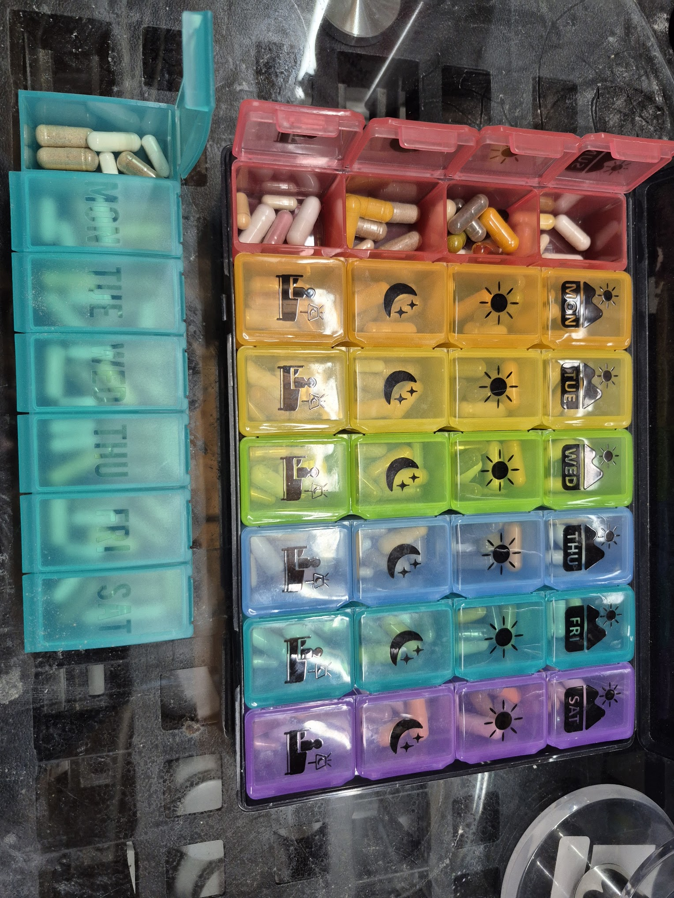

FIT PROTOCOL · V2.0Checklists
Annex II · Operator + Red-Flag Checklists
Annex II - Operator checklists and red-flag checklist
Daily operator checklist
Sleep hours and awakenings recorded. Caffeine total estimated including tea.
Branch selected correctly: training grid only on training days.
R-ALA swallowed whole with water before V4 (training days).
Stool, pain, weakness and performance noted in one line each.
Optional items (Medi-C, Hey Relax) marked as taken or skipped - never assumed.
Weekly review (15 minutes)
Performance trend stable or improving? Hardware locks quiet?
One variable changed at most. Next review date set.
Red-flag checklist - for clinician discussion. Stop and seek assessment for:
Progressive hand or limb weakness, new numbness, bowel or bladder change.
Jaundice, dark urine with pale stool, fever with abdominal pain.
Recurrent watery stools with weight loss, oily stools, significant abdominal pain.
Palpitations, fainting, unusual slow pulse, muscle twitching with GI cramps (cholinergic watch).
Recurrent sweating, tremor or confusion after training (hypoglycaemia watch on R-ALA days).
Sleep disruption that does not resolve when caffeine is pulled earlier.
Bring this Encyclopedia, the current product labels and the laboratory playbook (Part VI) to the appointment. The clinician needs the
stack as recorded, not as remembered.
Daily guide notes · Daily Execution — the Two Checklists
Daily Execution — the Two Checklists
TRAINING DAY
REST DAY
[ ] Prime Directive check: sleep adequate?
[ ] Protein held; energy moderated
[ ] Intake: protein anchored at every meal
[ ] Rest vectors only: V3 when consumed, V5 if consumed, V10; training pill grids skipped
[ ] Vectors V1, V2, V3, V4, V10 timed; caffeine cut- off set; V6 V6 PUMP inactive in morning/rest branches; evening override only in morning/rest branches; evening override only
[ ] HRV, mood, GI reviewed
[ ] Session: log load, RPE, joint feedback
[ ] Grid statuses confirmed (no silent re-adds)
[ ] Recovery meal per Encyclopedia Ch. 5; fat spread
[ ] Next session planned against recovery data
[ ] Weekly: margins page re-read (page 8)
[ ] Evening: magnesium separated from largest meal
[ ] Log: symptoms coded; nothing changed mid- week without a note
The rehabilitation rule: a rest day executed perfectly is training. The comeback is built on the days you do not lift.
Source: Open the focused protocol file ↗
Daily guide notes · Appendix — One-Page Reference
Appendix — One-Page Reference
| Item | Locked / Published |
|---|---|
| Target | 100 lb skeletal muscle; <15% BF; FFMI 23.86 → 25.71 |
| Equation | INTAKE x VECTOR x TIME; training day vs rest day |
| Zinc Supreme | Removed (system zinc ~25 mg) |
| Copper | Paused pending lab review |
| Boron | Locked 1 x 3 mg |
| Magnesium | 341 / 446 / 646 mg scenarios; separate from Vit C and fat |
| Vitamin C | 452.9 → 2,452.9 mg; split at high end |
| Caffeine | IGNITER ~373 mg before tea (Earl Grey +40–70 mg); timing protects sleep |
| Chronometer | Training: V1, V2, V3, V4, V10 + full grids. Rest: V3, V5, V10; grids skipped. V6 V6 PUMP inactive in morning/rest branches; evening override only in morning/rest branches; evening override only |
| V4 / RapiDrem | V4 = half BioSteel serving. RapiDrem replaces BioSteel Hydration in V2 and V5 |
| Carnivor (V3) | Canadian panel: zero added creatine — do not credit 2.5 g |
| Creatine HCl / Biotin | 1.5 g daily / 425 mcg daily — disclose both before labs; add cystatin-C |
| Nutrition totals | Partial label calculations only; 2,780 kcal / 252 g P / 69 g F are legacy planning figures |
| Labs | Disclose biotin 425 mcg + creatine HCl 1.5 g; cystatin-C with creatinine; no universal 72-h biotin hold |
| Vectors | Never stack a 5th cholinergic; piperine = medication check; ALA symptom pattern known |
Complete Clinical Analysis merged, 2026-10-03). Personal system documentation; not medical advice. Filename: project-100- guidebook-v2-0-2026-10-03.pdf
Source: Open the focused protocol file ↗